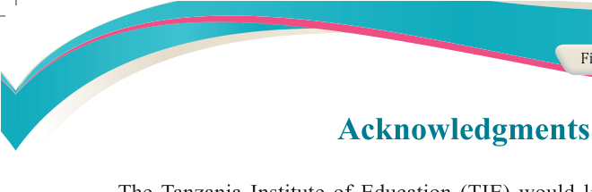
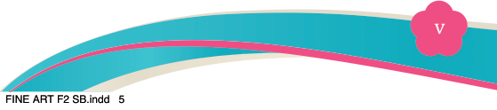
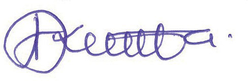

Fine Art for Secondary Schools

v


Student’s Book Form Two
Acknowledgments

The Tanzania Institute of Education (TIE) would like to acknowledge the
contributions of all the organizations and individuals who participated in designing
and developing this manuscript. In particular, TIE wishes to thank the University
of Dar es Salaam (UDSM). In particular, the following individuals are also
acknowledged:
Writers:
Dr George Danford Nahimiani (UDSM), Dr Dinnah Enock
Nicodemus (UDSM), Mr Apolinary Markus Ndomba (Butimba
TC), Mr Lucas James Sige (UDSM), Mr Huruma Edmund Haule
(TaSUBa) & Mr Lucas Gabriel (Kikeo Secondary School)
Editors:
Dr Leonard Charles Mwenesi (UDSM), Dr Kiagho Bukheti
Kilonzo (UDSM), Dr Dominick Dunford Makanjila (UDSM), Mr
Bryan Josephat Rugangira (UDSM) and Mr Anaeli Furahanaeli
Kihumrwa (UDSM)
Designer:
Ms Rehema Abdallah
Illustrators:
Mr Fikiri Msimbe (TIE) & Alama Art and Media Production
Limited
Photographer: Mr Chrisant Ignas (TIE)
Coordinator:
Dr George Danford Nahimiani
TIE also appreciates the participation of the secondary school teachers and students
in the trial phase of the manuscript. Likewise, the Institute would like to thank the
Ministry of Education, Science and Technology for facilitating the writing and printing of this textbook.

Dr Aneth Komba
Director General
Tanzania Institute of Education
04/08/2025 13:54